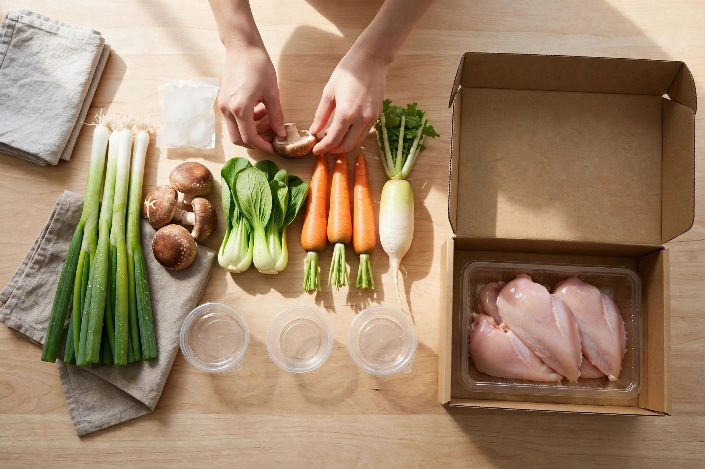

ミールキットは「献立と下ごしらえまで」を作ってもらう形

ミールキットは完成品ではありません。献立を決める作業と、食材をそろえて下ごしらえする作業はサービス側が担い、最後の調理は台所に残ります。この記事では、総額と送料、手間の残り方を公式の表示で記録します。味の順位付けはしません。
物差しは2人前の総額と、1人1食あたりの換算です。送料と手数料は別枠で書き、合計の見え方がサービスでどう違うかを並べます。
総額と手間の出方
| サービス・コース | 2人前の総額 | 1人1食の換算 | 送料・手数料 | 台所に残る手間 |
|---|---|---|---|---|
| Oisix Kit Oisix | 1,080円（税抜）〜 | 約540円〜 | 注文額で変わる階段型 | 調理のみ（下ごしらえ済み） |
| Oisix CookBox | 公式ページで確認 | — | 注文額で変わる階段型 | 調理のみ |
| ヨシケイ（主要コース） | 約1,380円 | 約690円 | 配達料なし | 調理のみ（食材は当日配達） |
| 生協のミールキット（コープデリ／パルシステム） | 861〜1,317円 | 約430〜658円 | 週手数料型（注文のない週も手数料の場合あり） | 調理のみ。配達エリアは1都7県／12都県に限られる |
数値は2026年11月26日に各公式サイトで確認した表示です。コースと人数で変わるため、幅のあるものは幅のまま書いています。生協の扱いは記事5（食材宅配と買い物の使い分け）で、エリアと手数料の仕組みから詳しく扱います。
編集部の見方
ミールキットで減るのは「決める回数」と「買い物の回数」で、調理の時間そのものは大きく減りません。帰宅後の負担の中心が献立決めにある家庭では効き方が大きく、調理自体が負担の中心なら冷凍弁当の方が合います。総額ではヨシケイの配達料なしが効き、生協は単価が割安な代わりにエリアと週手数料の条件が付きます。
献立を考えなくて済む回数で見る
週5日の夕食を前提にすると、ミールキットを週3回使う形では「今日は何にするか」を考える回数は週5回から2回へ減ります。残る2回は自炊か外食で、その分は献立決めが戻ってきます。全部を任せる形にしたい場合は冷凍弁当との組み合わせになり、その時の冷凍庫の空きは冷凍庫の計算ページで先に分かります。
申し込み先
料金の記録は上の表のとおりです。お試しセットのあるサービスは、初回の総額が通常と違うため分けて書いています。
Oisix おためしセット
初回 1,000円 （A8.net 経由の成果条件は初回購入、2026年11月26日確認）
Kit Oisix を含むお試しセットです。通常の定期料金とは別の初回価格のため、継続する場合の総額は上の表の通常価格で見てください。
編集部の見方：ミールキットの手間の残り方を1回で体験できる入口です。下ごしらえ済みの食材で、調理だけが残る形が分かります。
Oisix 公式サイトでおためしの内容を見る